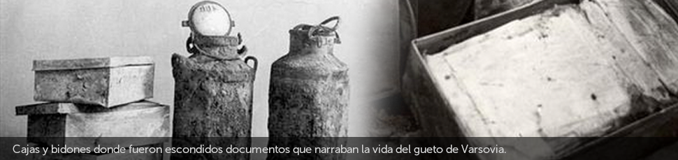
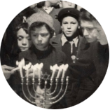
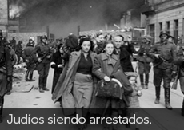
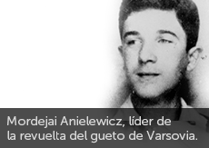
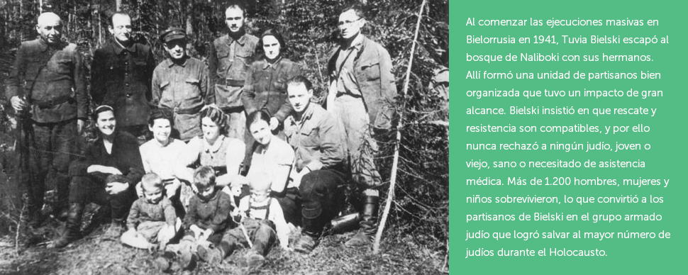

Resistencia y Rescatadores

Resistencia
"Resistió quien consiguió un trozo de pan
Resistió quien dio clases a escondidas
Resistió quien escribió y distribuyó un diario clandestino poniendo fin a falsas
ilusiones
Resistió quien introdujo secretamente un Sefer Torá (Libro sagrado del judaísmo)
Resistió quien falsificó documentos 'arios' que salvaron vidas
Resistió quien condujo a los perseguidos de una tierra a otra
Resistió quien describió los acontecimientos enterrándolos en papel
Resistió quien ayudó a los más necesitados
Resistió quien pronunció aquellas palabras que lo llevaron a su propio fin
Resistió quien levantó el puño contra los asesinos
Resistió quien transmitió mensajes entre los sitiados, y consiguió traer
provisiones y algunas armas
Resistió quien sobrevivió
Resistió quien combatió armado en las calles de ciudades, montañas y
bosques
Resistió quien se rebeló en los campos de exterminio
Resistió quien se rebeló en los guetos, entre muros caídos, en la revuelta
más destituida de esperanzas que supo alguna vez el ser humano."
Jaim Guri
“Cualquier cosa podía interpretarse como resistencia, porque todo estaba prohibido.”
Andrea Devoto, psiquiatra italiano
PERIÓDICOS CLANDESTINOS
Existía en algunos guetos una prensa clandestina que se publicaba en forma irregular.
“De vez en cuando mi padre trae a casa alguno de esos periódicos y luego se compromete a entregarlo en la mano de otra persona cuyo nombre se niega a revelar. Así esas hojas pasan de casa en casa.”
A. Huberman, El Holocausto

La documentación
El Dr. Emmanuel Ringelblum comenzó a documentar lo que ocurría a su alrededor en Varsovia. Creó un archivo clandestino llamado “Oneg Shabat” (El disfrute del Sábado) en el cual se recolectaron documentos, diarios personales e investigaciones que contaban acerca de la vida y la muerte en el gueto de Varsovia.
Partes del archivo fueron enterradas en cajas metálicas y bidones de leche y fueron halladas luego de la guerra.
“Nuestra juventud debe crear células y grupos de resistencia espiritual que despierten en las masas del pueblo la fe en un futuro mejor y la voluntad de seguir existiendo.”
Tomado de La voz de los jóvenes, publicación clandestina del movimiento juvenil Gordonia, 11 de junio de 1942

Judíos encendiendo velas de Jánuca. Holanda, 1943.
Resistencia espiritual
"(...) Y aquellas de nosotras que eran observantes, ¿de dónde sacaban fuerzas para ayunar en Iom Kipur? (el Día del Perdón, el día más sagrado en la religión judía) ¿Y cómo se enteraban cuándo era Iom Kipur? ¿Y de dónde extraían, estos semiesqueletos, voluntad para no desfallecer con el cansancio de ese agotador combate minuto a minuto y paso a paso? ¡Sí! Cada minuto de vida allí era combate, resistencia. (...) Y cómo atraía, a menudo, el alambrado... Pero hubiese significado renunciar a la resistencia y eso, sabíamos, 'no debía hacerse'."
Janka Waserman, Vidershtand
El levantamiento del gueto de Varsovia
Los combatientes del gueto de Varsovia se convirtieron en un símbolo de la lucha por la dignidad.
A pesar de la desigualdad de fuerzas, el levantamiento del gueto de Varsovia fue la batalla más prolongada que debió enfrentar el ejército alemán en territorio ocupado hasta esa fecha, con excepción de Yugoslavia.




“Además de seis millones de judíos, los nazis intentaron asesinar en las cámaras de gas los valores morales básicos del hombre. La rebelión de los guetos fue quizá la máxima expresión de la preservación de esos valores en medio de la hoguera.”
Jaika Grosman, Vivir con las heridas
“No salimos con las armas para obtener una victoria; la victoria armada no podía ser nuestra. Salimos para defender el espíritu, y el enemigo no consiguió doblegar nuestro espíritu...”
Comunicado Hejalutz Halojem, agosto de 1943
Las revueltas en los campos
De todos los intentos de oponer resistencia durante el Holocausto, fueron las revueltas en los campos de exterminio las más osadas y las que menos posibilidades tenían.
A pesar de las dificultades y riesgo que implicaba, se conocen tres rebeliones en campos de exterminio:
En agosto de 1943- en el campo de Treblinka
En octubre de 1943- en el campo de Sobibor
En octubre de 1944- en el campo de Auschwitz - Birkenau
“Se escuchan dos disparos provenientes del campo No.1. Allí se ha iniciado la revuelta...
De inmediato un vigoroso fuego comienza a desplegarse desde las cámaras de gas. Ya han sido incendiadas...”
Chil Rajchman, Un grito por la vida. Sobreviviente de la rebelión de Treblinka y posteriormente radicado en Uruguay.

Judíos en los movimientos clandestinos
de resistencia
Los judíos que estaban escondidos en los diferentes países de Europa Occidental participaron de la resistencia clandestina.
Crearon sus propios grupos partisanos, formados por hombres y mujeres que habían logrado escapar de los guetos a los bosques. Estos movimientos se dedicaban a dinamitar y sabotear instalaciones enemigas.